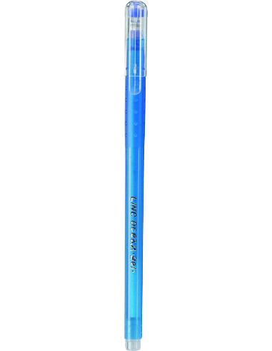
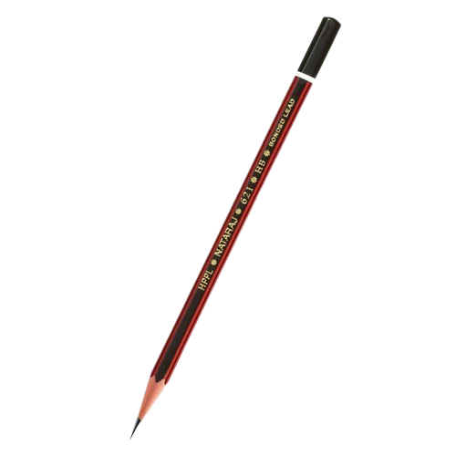
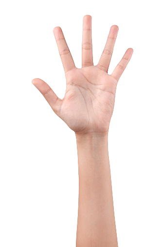

Test Image App
1-Test Image -

Output on
Wolframe Project-Caption
Output on
Mobilenet Model-pole
Result -
Mobilenet Model is more Accurate
2-Test Image -

Output on
Wolframe Project-pencil
Output on
Mobilenet Model-microphone
Result -
Wolframe Project is more Accurate
3-Test Image -

Output on
Wolframe Project-hand
Output on
MobilenetModel-hatchet
Result -
Wolframe Project is more Accurate